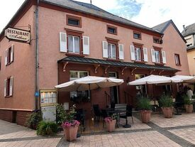
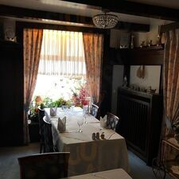

Le carnet de la maison, ouvert depuis toujours
Cuisine française & luxembourgeoise, servie à la table conviviale d'Ettelbruck.

Depuis de longues années, Arthur est l'une de ces adresses que l'on se transmet à Ettelbruck : une taverne chaleureuse, aux poutres apparentes et au linge blanc, où l'on revient pour une cuisine franche, généreuse et sans esbroufe.
Une carte courte, faite maison, travaillée avec les classiques français et luxembourgeois — et une constance que les habitués saluent depuis des années.
La spécialité de la maison
« La meilleure de la région », écrivent nos hôtes de retour. C'est le plat que l'on commande les yeux fermés — dorée, généreuse, servie comme il se doit.
À côté d'elle, la crème de champignons et la crème brûlée maison ferment le carnet en beauté. Composition et prix à confirmer avec l'établissement.
La salle a gardé son âme de taverne : bois chaud, rideaux, tables nappées de blanc et cette lumière douce du soir. Aux beaux jours, la terrasse fleurie s'ouvre sur la place.
« On y revient depuis des années — la même table, la même qualité. » — d'après nos hôtes réguliers

| Jour | Midi | Soir |
|---|---|---|
| Lundi | Fermé | |
| Mardi | 11:45–13:20 | 18:15–20:30 |
| Mercredi | 11:45–13:20 | 18:15–20:30 |
| Jeudi | 11:45–13:20 | 18:15–20:30 |
| Vendredi | 11:45–13:20 | 18:15–20:30 |
| Samedi | 11:45–13:20 | 18:15–20:30 |
| Dimanche | 11:45–13:20 | 18:15–20:30 |
Services courts, cuisine fermant tôt. Horaires à confirmer avec l'établissement.
Site de démonstration. Maquette non officielle réalisée pour présentation. Textes, horaires, carte et prix sont indicatifs et à confirmer avec l'établissement. Photographies haute résolution à fournir par la maison.